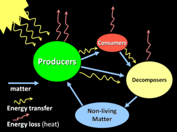

Kuna ökosüsteeme võib vaadelda mitmel eri viisil, ei ole olemas ühte kindlat, ökosüsteemi moodustavat komponentide hulka. Siiski koosnevad kõik ökosüsteemid biootilistest ja abiootilistest komponentidest, nende omavahelistest seostest ning teatud energiaallikastest. Lihtsaimaks (ja kõige vähem tüüpiliseks) ökosüsteemi näiteks võiks seega pidada ühte taime (biootiline komponent) kasvamas väikeses ja valgusele avatud akvaariumis, mis sisaldab taimekasvuks vajalikke toitaineid sisaldavat lahust (abiootiline keskkond). Ökosüsteemid kasutavad energiat ning neis toimub aineringe. Kuna energia ei ringle, vajavad ökosüsteemid oma struktuuri ja funktsioonide säilitamiseks pidevat kõrgekvaliteedilise energia juurdevoolu. Sellepärast ongi kõik ökosüsteemid nn "avatud süsteemid", mis vajavad püsimiseks energiavõrgustikku – ilma Päikeseta saaks biosfäärist energia varsti otsa.
Ökosüsteemi komponendid
Ökosüsteemid sisaldavad esmaseid tootjaid, kes suudavad fotosünteesi käigus Päikeselt energiat hankida ning kasutada seda süsihappegaasi ja teiste anorgaaniliste ainete muundamisel elu orgaanilisteks ehitusblokkideks. Sellest „kinnipüütud“ energiast toituvad tarbijad ja lagundajad. Lisaks muudavad lagundajad orgaanilise aine tagasi anorgaanilisteks koostisosadeks, mida tootjad saavad uuesti kasutada.